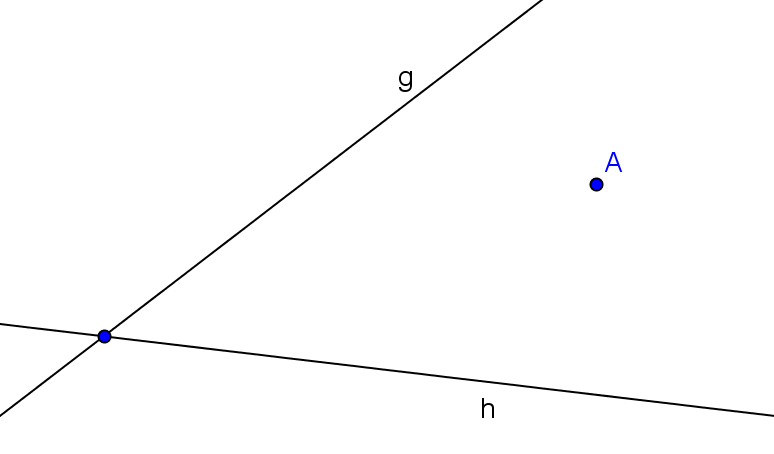

Aufgabe 10.4
Gegeben ist ein Winkel mit den Schenkeln $g$ und $h$. Der Punkt $A$ liegt im Winkelfeld.

Konstruieren Sie eine Strecke, die von $A$ halbiert wird, und deren Endpunkte $P$ und $Q$ auf $g$ bzw. $h$ liegen.
- Was bedeutet es, dass A die Strecke PQ halbiert?
- Wie hängen P und Q zusammen, wenn A ihr Mittelpunkt ist?
- Nutzen Sie die Punktspiegelung an A
- Auf welcher Ortslinie liegt Q, wenn P auf g liegt?
Orientierungsphase
Schritt 1: Festhalten der Bedingungen
Gegeben sind die Geraden $g$ und $h$, sowie der Punkt $A$. Gesucht ist die Strecke $PQ$, das folgende Bedingungen erfüllt:
- $\overline{PA} = \overline{QA}$
- $P \in g$
- $Q \in h$
Erkundungsphase
Schritt 2: Bedingung fallen lassen
Wir lassen die 3. Bedingung fallen und konstruieren eine Strecke $PQ$, die die ersten zwei Bedingungen erfüllt:
$P \in g$ beliebig, Gerade $s = \overline{AP}$, $k(A,r)$ mit $r = \overline{AP}$, $Q = k \cap s$.
Dabei entsteht $Q$ durch eine Punktspiegelung von $P$ an $A$.
Schritt 3: Variation von P
Bewege $P$ auf $g$. Die Ortslinie $l_Q$ von $Q$ ist ebenfalls eine Gerade, wie sich empirisch feststellen lässt.
Hinweis: Die Erkundungsphase kann interaktiv im GeoGebra-Applet nachvollzogen werden (siehe digitales Material).
Begründungsphase
Schritt 4: Mathematische Begründung
Die Ortslinie $l_Q$ entsteht durch eine Punktspiegelung der Geraden $g$ am Punkt $A$. Damit ist sie parallel zu $g$.
Detaillierte Begründung:
Bei einer Punktspiegelung an $A$ gilt für jeden Punkt $P$:
- Der Bildpunkt $Q$ liegt auf der Verbindungsgeraden durch $A$ und $P$
- Es gilt: $\overrightarrow{AQ} = -\overrightarrow{AP}$
- Die Punktspiegelung ist eine affine Abbildung, die Geraden auf parallele Geraden abbildet
Da $P$ sich auf der Geraden $g$ bewegt, bewegt sich $Q$ auf einer zu $g$ parallelen Geraden $l_Q$, die durch die Punktspiegelung von $g$ an $A$ entsteht.
Konstruktionsphase
Schritt 5: Konstruktion
Schnittpunkt von der Ortslinie $l_Q$ mit $h$ liefert das gesuchte $Q$. Damit lässt sich dann $P$ konstruieren durch Punktspiegelung an $A$.
Praktische Konstruktion:
Variante 1: Über zwei Punkte
- Wähle zwei beliebige Punkte $P_1, P_2 \in g$
- Konstruiere deren Spiegelbilder $Q_1, Q_2$ an $A$
- Die Gerade durch $Q_1$ und $Q_2$ ist die Ortslinie $l_Q$
- Der Schnittpunkt $\{Q\} = l_Q \cap h$ ist die gesuchte Ecke
- Spiegle $Q$ an $A$, um $P$ zu erhalten
Variante 2: Direkte Konstruktion
- Spiegle die Gerade $g$ an $A$ das ergibt die zu $g$ parallele Ortslinie $l_Q$ ($A$ liegt mittig zwischen $g$ und $l_Q$)
- Schneide $l_Q$ mit $h$: $\{Q\} = l_Q \cap h$
- Spiegle $Q$ an $A$: $P$ ist das Spiegelbild von $Q$
Wie in Aufgabe 6.2 lässt sich die Ortslinie konstruieren, indem zwei beliebige Punkte $Q_1$ und $Q_2$ wie oben beschrieben konstruiert werden. Diese spannen die Ortslinie auf. Alternativ liesse sich eine Parallele zu $g$ durch einen Punkt $Q$ konstruieren.
Eindeutigkeit:
Die Lösung ist eindeutig, da der Schnittpunkt von $l_Q$ mit $h$ eindeutig bestimmt ist (vorausgesetzt, $g$ und $h$ sind nicht parallel und $A$ liegt nicht auf einer der Geraden).